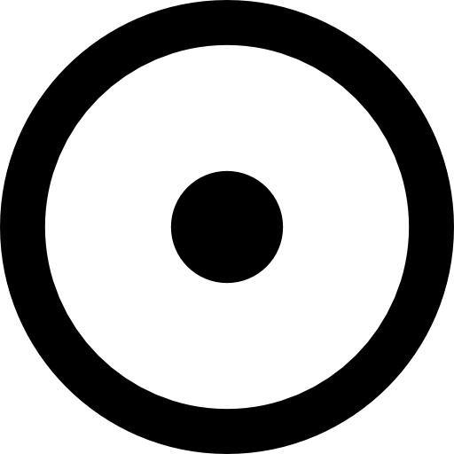

A nossa estrela


 |
 |
 |
 |
 |
 |
 |
||
| Mercurio | Venus | Terra | Marte | Jupiter | Saturno | Urano | Netuno | Plutão |
| 4.879 km | 12.104 km | 12.742 km | 6.779 km | 139.820 km | 116.460 km | 50.724 km | 49.244 km | 2.376 km |
| Rochoso | Rochoso | Rochoso | Rochoso | Gasoso | Gasoso | Gelo | Gelo | Rochoso |
| 00 | 00 | 01 | 02 | 95 | 274 | 28 | 16 | 05 |
O Sol como Arquétipo do Centro
Em termos simbólicos, o Sol representa o ponto de origem e organização. Ele não apenas ilumina — ele estrutura.
Na Psicologia
- Representa o ego organizado
- Centro da identidade consciente
Na Tradição
- Rá (Egito): fonte da vida
- Surya (Índia): consciência divina
- Sol Invictus (Roma): poder invencível
O Sol como Sistema Físico
O Sol é uma estrela do tipo G2V, composta majoritariamente por hidrogênio. Sua existência é sustentada por um processo contínuo de fusão nuclear.
Estrutura Interna
- Núcleo: onde ocorre a fusão nuclear.
- Zona radiativa: transporte de energia por radiação.
- Zona convectiva: movimento de plasma.
Função no Sistema Solar
- Fonte primária de energia
- Centro gravitacional
- Regulador térmico e orbital
Integração: Física e Consciência
O papel físico do Sol como centro gravitacional encontra um paralelo direto no conceito psicológico de “centro da consciência”.
- Assim como o Sol organiza planetas → o ego organiza pensamentos
- Assim como o Sol irradia energia → a consciência irradia significado
- Sem o Sol → o sistema colapsa
- Sem um centro psicológico → a mente se fragmenta